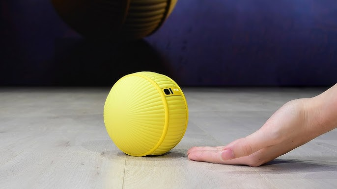

IoT Seminar
Attending the seminar positively impacted my understanding on the different aspects of IoT. The wide range of capabilities that the different types of IoT devices have is enough to automate almost every single object or environment. During the seminar, many seniors where IoT can be implemented were explaine, including the pros and cons of certain devices.
An example of installing different types of sensors in a hotel to make it a “smart” hotel was given to us. Now, what type of sensors may a hotel require or have?
1. Temperature sensors: To keep visitors comfortable, temperature sensors keep an eye on and adjust room temperatures. By integrating them with HVAC systems, temperatures can be automatically changed according to occupancy and user preferences. This guarantees that visitors will have a unique and enjoyable experience the entire time they are there.
2. Lighting sensors: regulate the amount of light in a room, lighting sensors measure ambient light levels and movement. To reduce energy consumption, they can be programmed to turn on lights automatically when visitors enter a room and to turn them off when they leave. They can also change the lighting according to the available natural light, which results in a more energy-efficient and natural atmosphere.
3. Water Leakage Sensors: sensors keep an eye out for possible leaks in pipes and plumbing fixtures. They can identify even tiny leaks early on, preventing expensive repairs and water damage.
4. Waste Bin Level Sensors: These sensors keep an eye on how full trash cans are in both public spaces and hotel rooms. When bins are full, they can send out alerts to housekeeping staff, guaranteeing that trash is taken out right away and upholding a clean and hygienic environment.

The presenters also gave us a visual explanation on the Samsung robot “Ballie”. Ballie has the ability to follow its user about the house and engage in conversation with them by using its microphone, camera, and other sensors. In order to give even more individualised support, it can also pick up on the user's habits and preferences.
Ballie is able to foresee its users needs and act accordingly. It can, for instance, turn on the lights, open the curtains, feed pets, switch on appliances(such as, Tv’s, Air conditioners, Dish Washers and more).
Ballie has the ability to educate and entertain its users. It can display videos, play games, and even teach lessons on a range of topics.

The presenters also set up a few devices for demonstration purposes. The set up included Smart doorbells, pressure sensors, motion sensors, door sensors.
Furthermore, we were shown the different softwares and programming languages that can be used to program certain IoT devices.